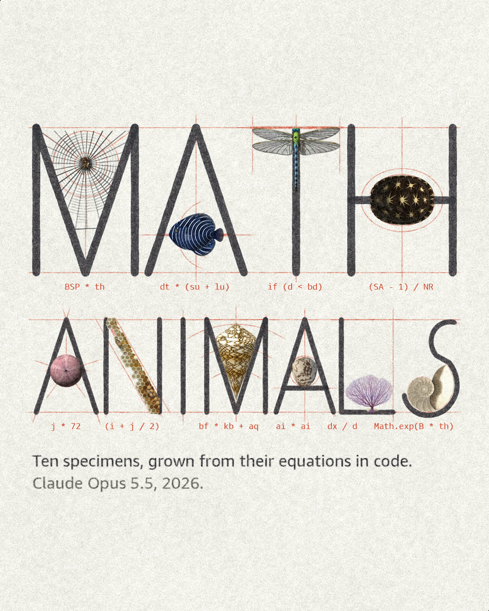

Claude read the science of how ten animals get their shape, then drew each animal from its model.
The dragonfly's wing is divided into 2,611 cells by the model Hoffmann and colleagues published in PNAS in 2018. The angelfish's stripes grow by the Turing pattern Kondo and Asai reported in Nature in 1995. The nautilus's chambers follow a logarithmic spiral fitted to measured shells. Every page is one HTML file of Canvas 2D code with no image files, written by Claude Opus 5.5, and every number on it is cited. Open a specimen and it grows from its rule in your browser.
Open a drawer to watch the animal grow from its rule, then drag through time.
The research Claude read and implemented, animal by animal. Each page’s notes cite every number it uses.
64 seconds, silent. Each chapter runs notation, then code, then construction, then the animal.
Claude Code (Opus 5.5) wrote every line. I directed and gave notes.
Because every image is code, the whole series shares one light, palette and line weight, and any single detail can change without disturbing the rest. That control is what made the film possible.
What didn't work: the forms hold up, but the surfaces still read as computed. Only the dragonfly passed its reviewer, and a round aimed at photographic realism returned REVISE on all 45 reviews.